COURSE INFO
0. 課程資訊與教材
課程名稱 EP202607.21「用手機遙控 Codex：讓 AI Agent 幫你處理任務」（年中共學 5 天系列之一） 頻道 生成式 AI 應用電台・年中共學 教材 官方課程簡報 20 頁（逐頁原圖全收錄）＋錄影回放 40.7 分鐘 一句話先懂 手機是控制台；真正執行任務、讀取檔案與修改內容的是電腦端。連線靠手機下載 ChatGPT App ＋電腦安裝 ChatGPT 桌面版 ，在設定裡找到「Remote」開啟，掃 QR Code 配對即可。
簡報封面｜用手機遙控 Codex：讓 AI Agent 幫你處理任務——手機下達任務，電腦端 Codex 執行並回傳文件、程式碼、分析結果。
CHAPTER 01
1. 開場：ChatGPT 額度管理小技巧
逐字稿原音（00:41–01:41）——正式進入手機遙控主題前，先教怎麼省額度。
用標準速度就好 ：不趕時間就別選快速，「速度越快，扣的量會越多」。推理強度選中間 ：選越高會耗費更多額度。模型選 5.4 mini ：「這些模型都是比較需要推理、比較需要寫程式的時候用，我們現在只是很簡單地安裝寫好的懶人包，所以用 5.4 mini 就好，可以大幅減少容量限制。」個人化性格選「務實」 ：不要選友善，「他會非常的囉唆」。
⚠️ 逐字稿（02:00–02:10）補充：想讓 Codex 自動上網找資料，「瀏覽器」開關要打開；想讓它連接你的電腦操縱東西，「Computer Use」開關也要打開。額度用完可以換一個 AI 帳號進去做，同樣工作場合換個帳號即可。
CHAPTER 02
2. 手機如何遙控 Codex
簡報 2｜手機是控制台；真正執行任務、讀取檔案與修改內容的是電腦端。① 手機下達任務與查看進度：在 ChatGPT 手機 App 選擇 Codex，下達任務並即時查看執行進度 ② 電腦執行指令、讀檔、修改內容：電腦端的 ChatGPT 桌面 App / Codex 收到指令後，執行任務、讀取檔案並修改內容 ③ 結果回傳手機，必要時由你核准操作：任務完成或需要確認時，結果與變更摘要回傳到手機，由你核准後再執行後續操作（如提交、發布等）。
逐字稿（03:38–03:53）：「我們今天人在外面，我們想要操控我的電腦，讓我的電腦可以去做事情——讓他可以去幫你做簡報、讓他可以去使用 Skill、讓他可以去使用 MCP，幫你做任何的事情。」
💡 常見誤解澄清（03:55–04:10）：手機跟電腦不需要同一個網路 ——「你這支手機在外面，怎麼可能會分享網路給他」；重點是你的電腦要開機 ，手機才讀得到，這不是網路共享問題。
CHAPTER 03
3. 開始前要準備什麼
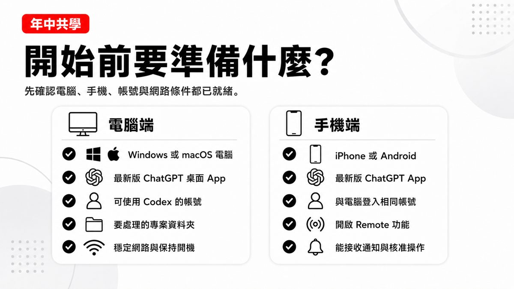
簡報 3｜先確認電腦、手機、帳號與網路條件都已就緒。
端 準備項目 電腦端 Windows 或 macOS 電腦、最新版 ChatGPT 桌面 App、可使用 Codex 的帳號、要處理的專案資料夾、穩定網路與保持開機 手機端 iPhone 或 Android、最新版 ChatGPT App、與電腦登入相同帳號、開啟 Remote 功能、能接收通知與核准操作
⚠️ 逐字稿（06:57–07:08）：手機請下載「ChatGPT」App，不是下載「Codex」App ——「一定一定是打 GPT，你也找不到 Codex。」
CHAPTER 04
4. 電腦端如何安裝與設定
簡報 4｜先在電腦完成桌面 App 安裝，再進入 Codex 專案環境。① 安裝 App：下載並安裝 ChatGPT 桌面 App ② 登入帳號：使用可用 Codex 的帳號登入 ③ 開啟專案：選擇要處理的資料夾或專案 ④ 先做測試：先請 Codex 讀取檔案並回報內容。建議先備份或建立 Git checkpoint，再進行大量修改。
逐字稿（04:54–05:05）：Mac 下載的是 dmg 檔，Windows 版綁在 Microsoft Store 裡，「按開啟就好」。第一次登入時 ChatGPT 與 Codex 兩個介面可以選，「不管你的界面在 GPT 或者是在 Codex，功能是一模一樣的」。
CHAPTER 05
5. 手機端如何配對 Remote
簡報 5｜手機連接 Codex 前，先把環境設好——電腦端（最新版 App、可用帳號、專案資料夾、保持開機不睡眠、Allow connections/Set up Remote 已開啟）、手機端（最新版 App、相同帳號/工作區、開啟通知、iPhone 或 Android 都可、掃描 QR Code 完成配對）、連線條件（穩定 Wi-Fi、優先有線網路、避免頻繁切換或睡眠、檢查 VPN/防火牆）。重點：Remote 不是雲端代跑；真正執行任務的是電腦端。
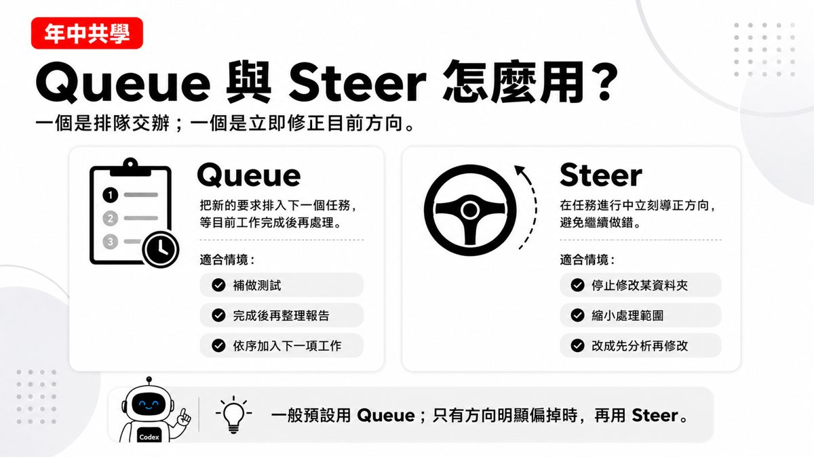
簡報 8｜從電腦開啟 Remote 設定，再用手機掃描 QR Code 完成連線：① 電腦開啟 Remote（進入 Set up Remote）② 顯示 QR Code ③ 手機掃描（ChatGPT App 掃描配對）④ 完成驗證（帳號、工作區與驗證確認）。回到電腦確認：Allow connections 已開啟，裝置已出現在連線清單。
逐字稿（05:41–06:16）：遠端連接功能藏在兩個地方——① 問號說明選單裡有「設定遠端」② 帳號設定裡滑到「連線」，兩邊都能進去設定手機配對。
CHAPTER 06
6. 如何用手機交辦任務＋手機看得到什麼
簡報 6｜在手機選擇主機與專案後，用自然語言交代工作內容：① 選擇主機（在 Remote 中選擇已連線的電腦）② 選擇專案（進入資料夾、Git repository 或既有對話）③ 下達任務（先請 Codex 閱讀資料，再提出計畫、修改與測試）。推薦說法：「先讀取這個資料夾，說明有哪些檔案與用途；提出修正計畫，等我核准後再修改。」
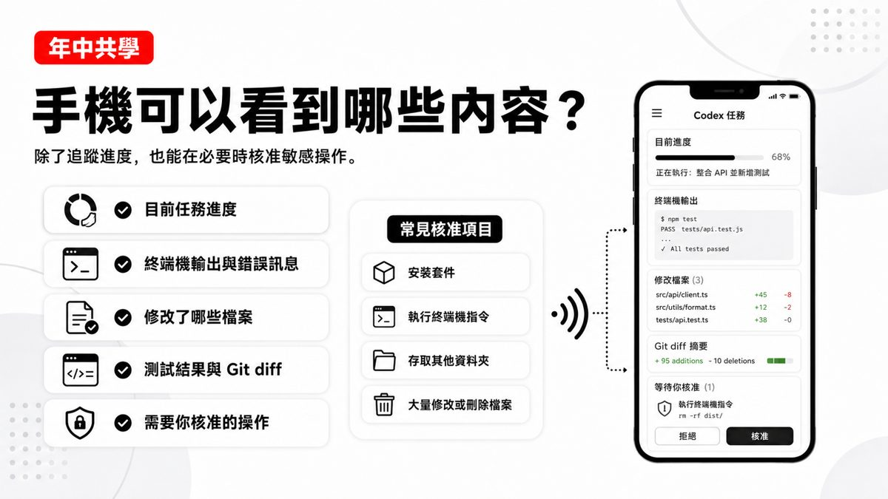
簡報 7｜除了追蹤進度，也能在必要時核准敏感操作：目前任務進度、終端機輸出與錯誤訊息、修改了哪些檔案、測試結果與 Git diff、需要你核准的操作。常見核准項目：安裝套件、執行終端機指令、存取其他資料夾、大量修改或刪除檔案。
CHAPTER 07
7. Queue 與 Steer 怎麼用
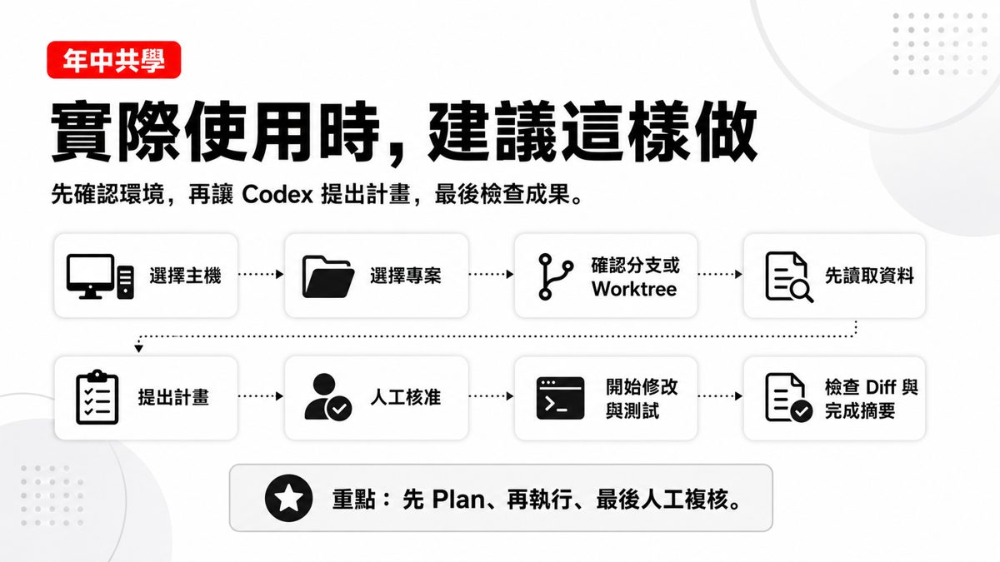
簡報 9｜Queue：把新的要求排入下一個任務，等目前工作完成後再處理——適合補做測試、完成後再整理報告、依序加入下一項工作。Steer：在任務進行中立刻導正方向，避免繼續做錯——適合停止修改某資料夾、縮小處理範圍、改成先分析再修改。一般預設用 Queue；只有方向明顯偏掉時，再用 Steer。
CHAPTER 08
8. 連不上或看不到主機怎麼辦
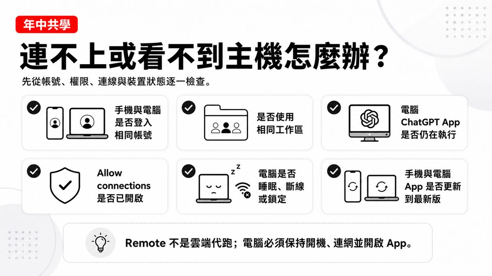
簡報 10｜先從帳號、權限、連線與裝置狀態逐一檢查：手機與電腦是否登入相同帳號、是否使用相同工作區、電腦 ChatGPT App 是否仍在執行、Allow connections 是否已開啟、電腦是否睡眠斷線或鎖定、手機與電腦 App 是否更新到最新版。Remote 不是雲端代跑；電腦必須保持開機、連網並開啟 App。
CHAPTER 09
9. 最適合示範的任務＋更順暢的建議
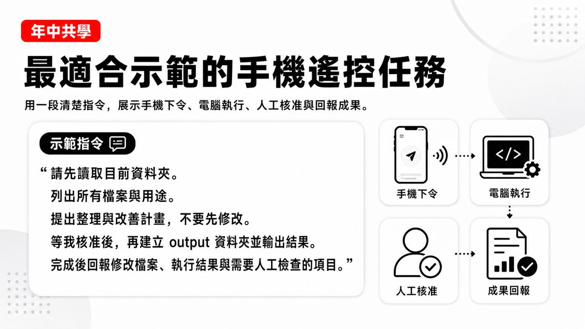
簡報 11｜用一段清楚指令，展示手機下令、電腦執行、人工核准與回報成果的完整流程。示範指令：「請先讀取目前資料夾。列出所有檔案與用途。提出整理與改善計畫，不要先修改。等我核准後，再建立 output 資料夾並輸出結果。完成後回報修改檔案、執行結果與需要人工檢查的項目。」
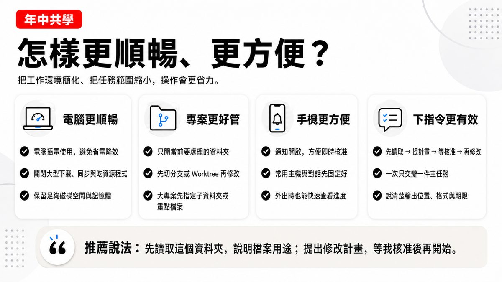
簡報 13｜把工作環境簡化、任務範圍縮小，操作會更省力：電腦更順暢（插電使用、關閉大型下載）、專案更好管（只開當前資料夾、先切分支或 Worktree）、手機更方便（通知開啟、常用主機與對話先固定好）、下指令更有效（先讀取→提計畫→等核准→再修改，一次只交辦一件主任務）。
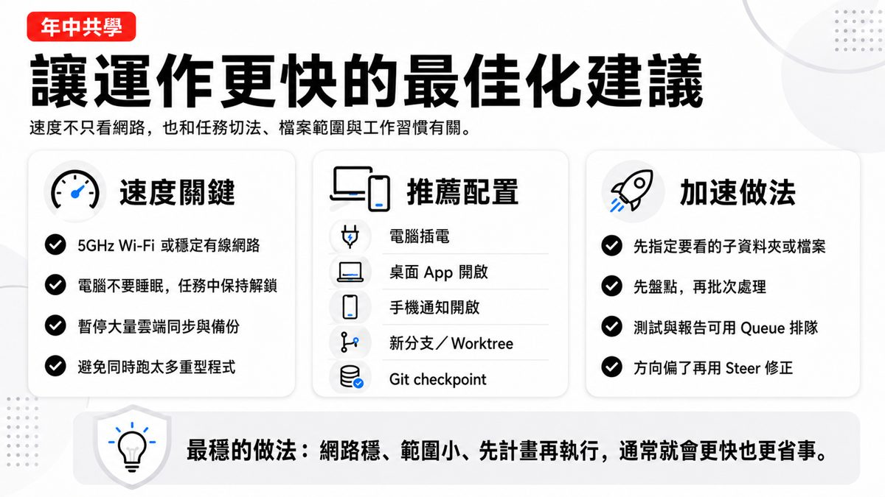
簡報 14｜速度不只看網路，也和任務切法、檔案範圍與工作習慣有關：速度關鍵（5GHz Wi-Fi 或穩定有線、電腦不睡眠、暫停大量雲端同步）、推薦配置（電腦插電、桌面 App 開啟、新分支/Worktree、Git checkpoint）、加速做法（先指定子資料夾、先盤點再批次、測試報告可用 Queue 排隊）。最穩的做法：網路穩、範圍小、先計畫再執行。
CHAPTER 10
10. 實作案例：MCP-NotebookLM＋Skill 簡報製作
案例一：MCP–NotebookLM 實作
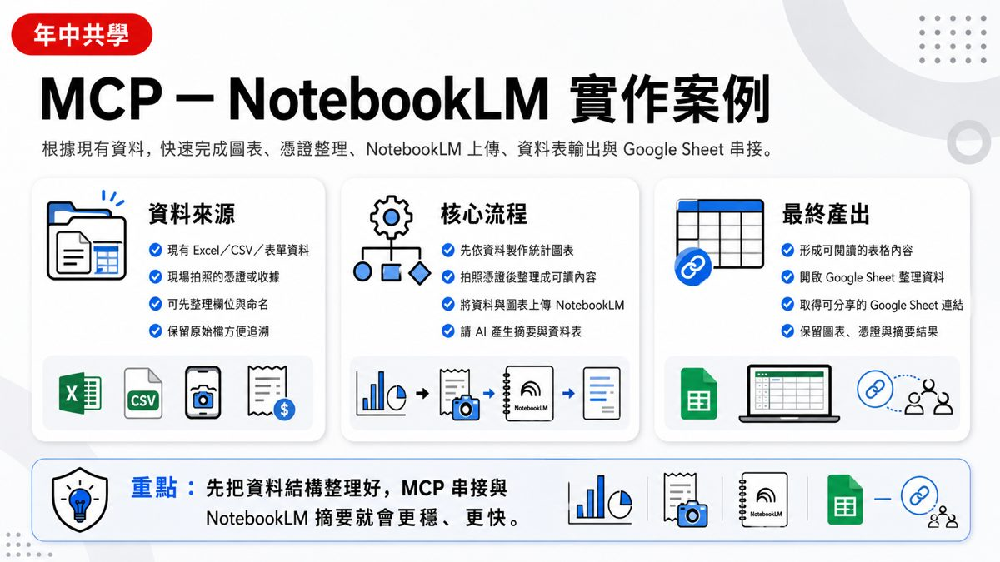
簡報 15｜根據現有資料，快速完成圖表、憑證整理、NotebookLM 上傳、資料表輸出與 Google Sheet 串接。資料來源：現有 Excel/CSV/表單資料、現場拍照的憑證或收據。核心流程：先依資料製作統計圖表 → 拍照憑證後整理成可讀內容 → 將資料與圖表上傳 NotebookLM → 請 AI 產生摘要與資料表。最終產出：形成可閱讀的表格內容、開啟 Google Sheet 整理資料、取得可分享的連結。
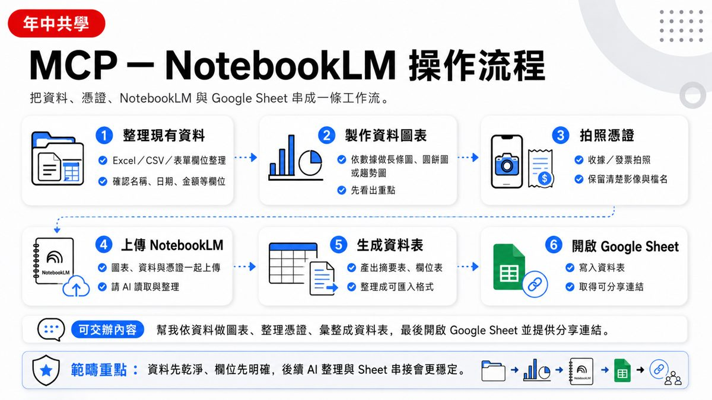
簡報 16｜六步驟：① 整理現有資料 ② 製作資料圖表 ③ 拍照憑證 ④ 上傳 NotebookLM ⑤ 生成資料表 ⑥ 開啟 Google Sheet。可交辦內容：「幫我依資料做圖表、整理憑證、彙整成資料表，最後開啟 Google Sheet 並提供分享連結。」範疇重點：資料先乾淨、欄位先明確，後續 AI 整理與 Sheet 串接會更穩、更快。
案例二：Skill 導入簡報製作
簡報 18｜從需求輸入到上傳 Google 簡報與 Canva，形成完整交付流程：① 提供需求（主題／對象／頁數／風格／用途）② 啟動簡報 Skill（讀取需求、建立大綱與頁面架構）③ 生成簡報內容（標題／重點／圖像建議／講者用語）④ 版面與校正（調整字句、順序、設計風格、確認內容正確）⑤ 上傳 Google 簡報（形成可分享連結，方便協作編輯）⑥ 同步 Canva（便於視覺微調，輸出社群或簡報版本）。推薦指令：「請依本主題製作 10 頁簡報，先列大綱，再完成每頁重點，最後上傳 Google 簡報與 Canva。」
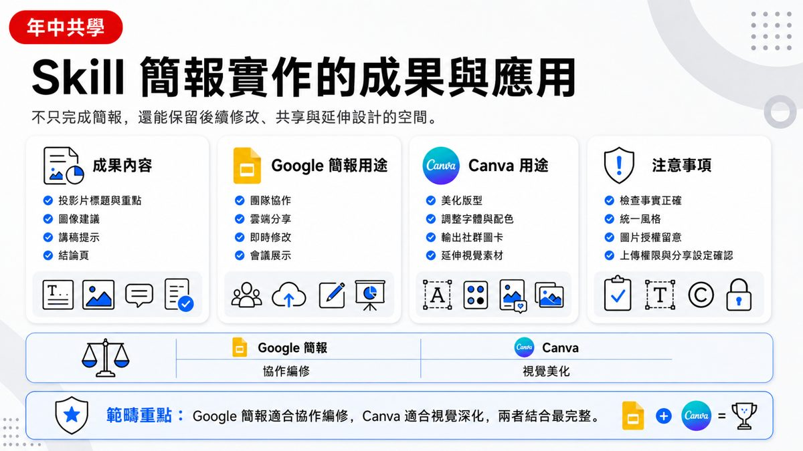
簡報 20｜不只完成簡報，還能保留後續修改、共享與延伸設計的空間：Google 簡報適合協作編修（團隊協作、雲端分享、即時修改、會議展示），Canva 適合視覺深化（美化版型、調整字體配色、輸出社群圖卡、延伸視覺素材）。注意事項：檢查事實正確、統一風格、圖片授權留意、上傳權限與分享設定確認。
RECAP
11. 重點整理
額度管理技巧 ：標準速度、推理強度中等、模型選 5.4 mini、性格選務實。手機下載 ChatGPT App，不是 Codex App ；電腦端要有 ChatGPT 桌面版。不需要同一網路 ：關鍵是電腦要保持開機、連網、App 保持執行。Remote 設定藏在兩處 ：說明選單「設定遠端」／帳號設定「連線」。Queue vs Steer ：一般用 Queue 排隊；方向明顯偏掉才用 Steer 立即導正。最穩做法 ：網路穩、範圍小、先讀取再提計畫、等核准再修改。兩個實作案例 ：MCP–NotebookLM（資料圖表化＋憑證整理＋Google Sheet 串接）、Skill 簡報製作（需求→大綱→內容→上傳 Google 簡報與 Canva）。
SOURCES
12. 資料來源與製作說明
原始教材： EP202607.21「用手機遙控 Codex：讓 AI Agent 幫你處理任務」官方課程簡報 20 頁（逐頁原圖全收錄）＋錄影回放（40.7 分鐘）；均為 anyone-reader 權限、公開可下載。製作方式： 下載完整錄影 → faster-whisper（small 模型）產出逐字稿 → 下載原始 pptx 取出 20 頁投影片原圖 → 逐頁親眼判讀 並對照逐字稿整理成本頁章節。內容為真實課程內容 ，非推測改寫。介面參考： 版型沿用本站 EP29–EP47 課堂筆記的乾淨白底編輯風格。